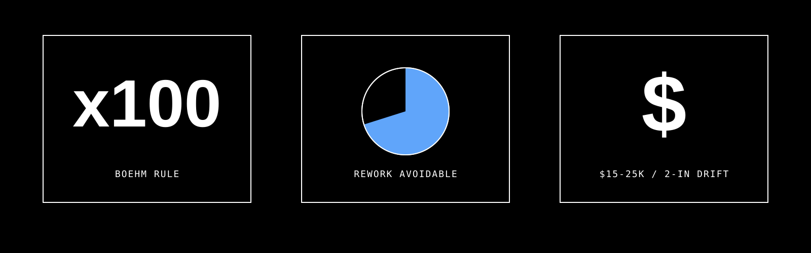
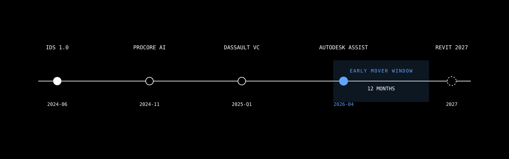

後期返工很貴——Boehm 40 年前在軟體業已經證明過。70% 的營建返工本可避免——united-bim 統計過。2 吋誤差直接燒掉 $15-25K——Nexora 算過。MCP 在 BIM 的價值不是發明新理論，而是把三套成熟方法論（Stage-Gate / Definition of Done / CI Quality Gates）套到設計流程的第一個切入點。本頁集中業界證據與外部資源。
MCP × BIM 不是「酷炫概念」，是 40 年成本曲線的當代應用。下面三組數字直接回答「為什麼要早期介入限制檢查」。

Barry Boehm 1981 年首次提出後，1996 年 Boehm & Basili 在《Software Defect Reduction Top-10 List》中再驗證：缺陷在需求階段修正花 $1，到維護階段修正可能花 $100。後續多份研究在嵌入式系統、企業軟體、營建 IT 系統重複驗證此曲線。
同一條曲線在營建業更陡峭：設計階段改一條走廊牆 = 改 Revit model；施工階段改 = 拆混凝土 + 補強 + 延工期 + 索賠。MCP 把「在設計階段把限制顯現」當成預設動作，正是把成本從 100× 端拉回 1× 端。
united-bim 在 BIM 衝突協調報告中估算：營建現場返工有約 70% 屬於可避免類——意思是這些返工的根因都能在設計或前期協調階段被偵測。剩下 30% 才是真正不可預期的變更（地質、業主後期需求變化）。
不是技術不夠，是協調動作不發生在對的時間點。BIM 360 / Navisworks 可以跑碰撞，但很多事務所是「圖紙快出了才跑一次」——這時錯誤已經寫進 model，要回頭改的成本接近 Boehm 100× 那端。MCP 把碰撞檢查、採光檢查、消防檢查做成「設計師問就答」的 on-demand 工具，目標是把這 70% 從「後期才知道」變成「每個階段完成點都知道」。
Nexora Design 在 MEP 協調失誤研究中算過一筆直接成本：MEP 走管路線上一處2 吋（約 5 cm）的誤差，若到現場才發現，直接修正成本（拆裝、改件、停工）約 $15,000–$25,000 美金。這還不含 schedule 連動的索賠與罰款。
每一套方法論都已在自己的場域跑了 20–40 年。MCP 做的是把它們的「核心動作」搬到 BIM 設計流程。
| 方法論 | 起源年 | 原領域 | 核心動作 | 對應命題 |
|---|---|---|---|---|
| Stage-Gate | 1986 | 汽車 / 製造業 | 每個 stage 結束做 Go / Recycle / Kill 三元決策 | P7 · P15 |
| Definition of Done | ~2003 | Agile / 軟體 | checklist 全綠才算「完成」，否則 in-progress | P13 |
| CI/CD Quality Gates | ~2010 | 軟體交付 | branch protection + automated check，FAIL 就擋 merge | 第二憲法 |
原本用在汽車業：每個 stage（concept / design / prototype / launch）結束都有一個 gate，由 cross-functional team 做 Go / Recycle / Kill 決策。Recycle 不是失敗，是「回去多做一輪再來」。
MCP 的 PASS/FAIL 就是 stage-gate 的 Go/Recycle。FAIL 不是失敗，是「設計師收到資訊後選擇 A/B/C/D 路線」（見 光譜決策）。MCP 提供 gate 機制，但不替設計師按按鈕。
Agile 團隊在 sprint 開始前定義 DoD：一個 user story 要滿足哪些條件才算「真的做完」。寫完 code 不算完，要過 test + code review + deploy to staging + acceptance 才算。
BIM 的 DoD 是 LOD（Level of Development）：LOD 200 / 300 / 400 各有自己的「該有什麼」。MCP 把「LOD 達成檢查」做成設計師按一個指令就能跑的批次工作流——對應 P13「MCP 是 0/1 執行器」的精神。
軟體交付管線常見：每個 commit 自動跑 lint + test + security scan，FAIL 就擋 merge。GitHub branch protection 是最簡單實作。Sonar / Codacy 等是進階版。
MCP 提供的是「BIM 版 quality gate 的料」——採光、消防、碰撞、容積等檢查像 lint rule。差別是不擋 merge（沒有 BIM 360 級的 lock 機制，也不該擋，呼應第一憲法被動就緒）。設計師收到 FAIL，自己決定是否繼續。
BIM AI 化的標準件還沒到位，每個官方解決方案都還有 12–24 個月的空白期。這段空白期就是把 SOP 沉澱進 domain/ 目錄的機會窗。

等 Autodesk 內建 MCP 後，工具層會被打平——但「採光 SOP / 消防 SOP / 容積 SOP」這些 domain 知識不會。沉澱在自家 domain/ 目錄的 SOP 是事務所專屬資產，跨工具可遷移。
本專案 44 個 domain/*.md 就是答案的雛形。
本頁所有數據與引用的原始來源。可直接拿來支援自家事務所的內部簡報或業主提案。